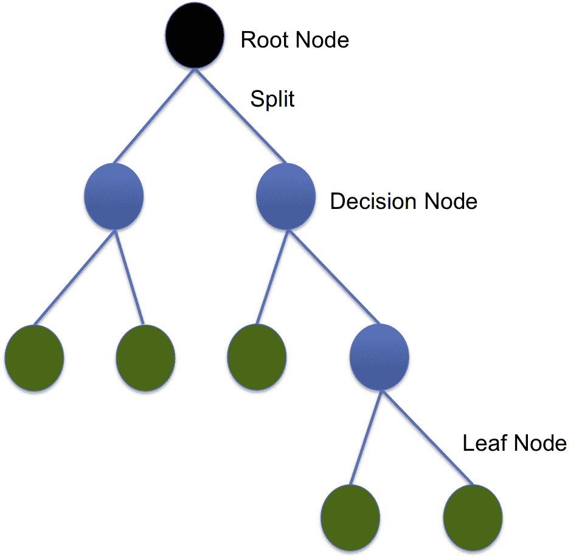

术语机器学习 ( ML )指的是能够自动检测数据中有意义的模式并随着经验进行改进的计算机程序。虽然这不是一个新领域，但目前正处于其炒作周期的顶峰。本章向读者介绍标准 ML 算法及其在物联网领域的应用。
阅读本章后，您将了解以下内容:
ML 是人工智能的一个子集，旨在建立具有自动学习和根据经验改进的能力的计算机程序，而无需显式编程。在这个大数据时代，数据以惊人的速度生成，人类不可能手动浏览所有数据并理解它们。根据 IT 和网络领域的领先公司思科的估计，到 2018 年，物联网每年将产生 400 的数据。这表明我们需要寻找理解这些巨大数据的自动方法，这就是 ML 的用武之地。
完整的思科报告于 2018 年 2 月 1 日发布，可在https://www . Cisco . com/c/en/us/solutions/parallels/service-provider/global-cloud-index-gci/white-paper-c11-738085 . html访问。它预测了物联网、机器人、人工智能和电信融合后的数据流量和云服务趋势。
研究和咨询公司 Gartner 每年都会发布一个图形表示，通过五个阶段从视觉和概念上展示新兴技术的成熟度。
你可以在https://www . Gartner . com/smarterwithgartner/5-trends-emerge-in-Gartner-Hype-Cycle-for-Emerging-Technologies-2018/找到 2018 年 Gartner 新兴技术炒作周期的图片。
我们可以看到，物联网平台和 ML 都处于膨胀预期的顶峰。这是什么意思？膨胀的期望的顶峰是在技术的生命周期中对技术有过度热情的阶段。大量的厂商和创业公司投资于巅峰时期的技术。越来越多的商业机构探索新技术如何适应他们的商业战略。简而言之，是时候投身于这项技术了。你可以在风险基金活动中听到投资者开玩笑说如果你只是在你的推销中包括机器学习，你可以在你的估值后面加一个零。
所以，系好安全带，让我们一起深入 ML 技术。
ML 算法可以根据它们使用的方法分类如下:
在本书中，我们将我们的 ML 算法分为有监督的和无监督的。这两者之间的区别取决于模型的学习方式以及提供给模型学习的数据类型:
你猜对了:下一个数字将是 36，接下来是 49，以此类推。这就是监督学习，也叫通过例子学习；没有人告诉你这个数列代表正整数的平方——你可以从提供的五个例子中猜出来。
以类似的方式，在监督学习中，机器从示例中学习。它具有由一组对( X ， Y )组成的训练数据，其中 X 是输入(它可以是单个数字或具有大量特征的输入值)，而 Y 是给定输入的期望输出。一旦对示例数据进行了训练，当呈现新数据时，模型应该能够得出准确的结论。
监督学习用于预测给定输入集的实值输出(回归)或离散标签(分类)。我们将在接下来的章节中探讨回归和分类算法。
有些人可能按照半径的递增或递减顺序排列它们，有些人可能按照颜色将它们分组。有很多方法，对我们每个人来说，这取决于分组时数据的内部表示。这是无监督的学习，人类的大部分学习都属于这一类。
在无监督学习中，模型只是被给定了数据( X )，但没有被告知任何相关信息；模型自己学习数据中的潜在模式和关系。无监督学习通常用于聚类和降维。
尽管我们在本书的大部分算法中使用 TensorFlow，但在本章中，由于为 ML 算法高效构建的 scikit 库，我们将使用 scikit 提供的函数和方法，只要它们提供更多的灵活性和特性。目的是为读者提供在物联网生成的数据上使用人工智能/人工智能技术，而不是重新发明轮子。
我的一个朋友亚伦在花钱方面有点马虎，他从来不会估计自己每月的信用卡账单会有多少。我们能做些什么来帮助他吗？是的，如果我们有足够的数据，线性回归可以帮助我们预测每月的信用卡账单。多亏了数字经济，他过去五年的所有货币交易都可以在网上查到。我们提取了他每月在食品杂货、文具和旅行上的支出以及他的月收入。线性回归不仅有助于预测他每月的信用卡账单，还能洞察哪个因素对他的支出最有影响。
这只是一个例子；线性回归可用于许多类似的任务。在本节中，我们将学习如何对数据进行线性回归。
线性回归是一项监督学习任务。这是预测中最基本、最简单、最广泛使用的 ML 技术之一。回归的目标是找到一个函数 F ( x，W )，对于给定的输入输出对( x ， y )，使得 y = F ( x，W )。( x ， y )对中， x 为自变量， y 为因变量，两者均为连续变量。它帮助我们找到因变量 y 和自变量 x 之间的关系。
输入 x 可以是单个输入变量或多个输入变量。当 F ( x，W )映射单个输入变量 x 时，称为简单线性回归；对于多个输入变量，称为多元线性回归。
函数 F ( x，W )使用以下表达式近似:
在这个表达式中， d 是 x 的尺寸(自变量的个数)，而 W 是与 x 的每个组件关联的权重。为了找到函数 F ( x，W )，我们需要确定权重。自然的选择是找到减少平方误差的权重，因此我们的目标函数如下:
在前面的函数中， N 是输入输出对的总数。为了找到权重，我们将目标函数相对于权重进行微分，并使其等于 0 。在矩阵表示法中，我们可以把列向量W=(W0， W 1 ， W 2 ，...、Wd)T如下:

通过区分和简化，我们得到以下结果:

X 是大小为[ N ， d ， Y 的输入向量，大小为[ N ，1]的输出向量。如果(XTX)-1存在，也就是说如果 X 的所有行和列都是线性无关的，则可以找到权重。为确保这一点，输入-输出样本的数量( N )应远大于输入特征的数量( d )。
需要记住的一件重要事情是，因变量 Y 相对于因变量 X 不是线性的；相反，它相对于模型参数 W 、权重是线性的。因此，我们可以使用线性回归对指数关系甚至正弦关系(在 Y 和 X 之间)进行建模。在这种情况下，我们将问题概括为寻找权重 W ，这样y=F(g(x)， W )，其中 g ( x )是 X 的非线性函数
既然你已经理解了线性回归的基础，让我们用它来预测联合循环发电厂的电力输出。我们在第 1 章、人工智能和物联网的原理和基础中描述了这个数据集；这里，我们将使用 TensorFlow 及其自动梯度来求解。数据集可从 UCI ML 档案库下载(http://archive . ics . UCI . edu/ML/datasets/combined+cycle+power+plant)。完整的代码可以在 GitHub(https://GitHub . com/packt publishing/Hands-On-Artificial-Intelligence-for-IoT)上获得，文件名为ElectricalPowerOutputPredictionUsingRegression.ipynb。
让我们通过下面的步骤来理解代码的执行:
# Import the modules
import tensorflow as tf
import numpy as np
import pandas as pd
import matplotlib.pyplot as plt
from sklearn.preprocessing import MinMaxScaler
from sklearn.metrics import mean_squared_error, r2_score
from sklearn.model_selection import train_test_split
%matplotlib inline # The data file is loaded and analyzed
filename = 'Folds5x2_pp.xlsx' # download the data file from UCI ML repository
df = pd.read_excel(filename, sheet_name='Sheet1')
df.describe()
X, Y = df[['AT', 'V','AP','RH']], df['PE']
scaler = MinMaxScaler()
X_new = scaler.fit_transform(X)
target_scaler = MinMaxScaler()
Y_new = target_scaler.fit_transform(Y.values.reshape(-1,1))
X_train, X_test, Y_train, y_test = \
train_test_split(X_new, Y_new, test_size=0.4, random_state=333)
class LinearRegressor:
def __init__(self,d, lr=0.001 ):
# Placeholders for input-output training data
self.X = tf.placeholder(tf.float32,\
shape=[None,d], name='input')
self.Y = tf.placeholder(tf.float32,\
name='output')
# Variables for weight and bias
self.b = tf.Variable(0.0, dtype=tf.float32)
self.W = tf.Variable(tf.random_normal([d,1]),\
dtype=tf.float32)
# The Linear Regression Model
self.F = self.function(self.X)
# Loss function
self.loss = tf.reduce_mean(tf.square(self.Y \
- self.F, name='LSE'))
# Gradient Descent with learning
# rate of 0.05 to minimize loss
optimizer = tf.train.GradientDescentOptimizer(lr)
self.optimize = optimizer.minimize(self.loss)
# Initializing Variables
init_op = tf.global_variables_initializer()
self.sess = tf.Session()
self.sess.run(init_op)
def function(self, X):
return tf.matmul(X, self.W) + self.b
def fit(self, X, Y,epochs=500):
total = []
for i in range(epochs):
_, l = self.sess.run([self.optimize,self.loss],\
feed_dict={self.X: X, self.Y: Y})
total.append(l)
if i%100==0:
print('Epoch {0}/{1}: Loss {2}'.format(i,epochs,l))
return total
def predict(self, X):
return self.sess.run(self.function(X), feed_dict={self.X:X})
def get_weights(self):
return self.sess.run([self.W, self.b])
N, d = X_train.shape
model = LinearRegressor(d)
loss = model.fit(X_train, Y_train, 20000) #Epochs = 20000
让我们看看经过训练的线性回归器的性能。具有时期的均方误差图显示网络试图达到均方误差的最小值:

在测试数据集上，我们实现了R2T40】的值 0.768 和 0.011 的均方误差。
在上一节中，我们学习了如何预测。在 ML 中还有另一个常见的任务:分类任务。区分狗和猫，垃圾邮件和非垃圾邮件，甚至识别房间或场景中的不同物体——所有这些都是分类任务。
逻辑回归是一种古老的分类技术。在给定输入值的情况下，它提供事件发生的概率。事件表示为分类因变量，特定因变量为 1 的概率使用 logit 函数给出:
在详细介绍如何使用逻辑回归进行分类之前，让我们先检查一下 logit 函数(也称为 sigmoid 函数，因为其曲线呈 S 形)。下图显示了 logit 函数及其导数随输入 X、变化的情况。Sigmoidal 函数(蓝色)及其导数(橙色):

该图中需要注意的一些重要事项如下:
我建议你使用本书 GitHub 库中的Sigmoid_function.ipynb程序，感受一下 sigmoid 函数是如何随着权重和偏差的变化而变化的。
逻辑回归旨在找到权重 W 和偏差 b ，使得输入特征空间中的每个输入向量XIT19】被正确分类到其类别yIT23】中。换句话说， y i 和  对于给定的 x i 应该有相似的分布。我们首先考虑一个二元分类问题；在这种情况下，数据点yIT38】可以有值 1 或 0 。由于逻辑回归是监督学习算法，我们给出训练数据对( X i ， Y i )作为输入，并且让
对于给定的 x i 应该有相似的分布。我们首先考虑一个二元分类问题；在这种情况下，数据点yIT38】可以有值 1 或 0 。由于逻辑回归是监督学习算法，我们给出训练数据对( X i ， Y i )作为输入，并且让  是P(Y=1|X=XI的概率然后，对于 p 训练数据点，总平均损失定义如下:
是P(Y=1|X=XI的概率然后，对于 p 训练数据点，总平均损失定义如下:

因此，对于每个数据对，对于YI=1，第一项将对损失项有贡献，随着 分别从 0 变到 1 ，贡献从无穷大变到 0 。类似地，对于YIT84】=0，第二项将对损失项做出贡献，随着
分别从 0 变到 1 ，贡献从无穷大变到 0 。类似地，对于YIT84】=0，第二项将对损失项做出贡献，随着 分别从 1 变到 0 ，贡献从无穷大变到零。
分别从 1 变到 0 ，贡献从无穷大变到零。
对于多类分类，损失项概括如下:

在前面， K 是类的数量。需要注意的重要一点是，对于二进制分类，输出 Y i 和 Y pred 是单值，而对于多类问题， Y i 和Ypred现在都是 K 维度的向量
现在让我们用我们所学的来给葡萄酒质量分类。听得出来你在想:什么酒质？不会吧！让我们看看与专业品酒师相比，我们的逻辑回归器表现如何。我们将使用葡萄酒质量数据集(https://archive.ics.uci.edu/ml/datasets/wine+quality)；关于数据集的详细信息在第 1 章、人工智能和物联网的原理和基础中给出。完整的代码在 GitHub 库的文件Wine_quality_using_logistic_regressor.ipynb中。让我们一步一步地理解代码:
# Import the modules
import tensorflow as tf
import numpy as np
import pandas as pd
import matplotlib.pyplot as plt
from sklearn.preprocessing import MinMaxScaler
from sklearn.metrics import mean_squared_error, r2_score
from sklearn.model_selection import train_test_split
%matplotlib inline
filename = 'winequality-red.csv' # Download the file from UCI ML Repo
df = pd.read_csv(filename, sep=';')
X, Y = df[columns[0:-1]], df[columns[-1]]
scaler = MinMaxScaler()
X_new = scaler.fit_transform(X)
Y.loc[(Y<3)]=3
Y.loc[(Y<6.5) & (Y>=3 )] = 2
Y.loc[(Y>=6.5)] = 1
Y_new = pd.get_dummies(Y) # One hot encode
X_train, X_test, Y_train, y_test = \
train_test_split(X_new, Y_new, test_size=0.4, random_state=333)
class LogisticRegressor:
def __init__(self, d, n, lr=0.001 ):
# Place holders for input-output training data
self.X = tf.placeholder(tf.float32,\
shape=[None,d], name='input')
self.Y = tf.placeholder(tf.float32,\
name='output')
# Variables for weight and bias
self.b = tf.Variable(tf.zeros(n), dtype=tf.float32)
self.W = tf.Variable(tf.random_normal([d,n]),\
dtype=tf.float32)
# The Logistic Regression Model
h = tf.matmul(self.X, self.W) + self.b
self.Ypred = tf.nn.sigmoid(h)
# Loss function
self.loss = cost = tf.reduce_mean(-tf.reduce_sum(self.Y*tf.log(self.Ypred),\
reduction_indices=1), name = 'cross-entropy-loss')
# Gradient Descent with learning
# rate of 0.05 to minimize loss
optimizer = tf.train.GradientDescentOptimizer(lr)
self.optimize = optimizer.minimize(self.loss)
# Initializing Variables
init_op = tf.global_variables_initializer()
self.sess = tf.Session()
self.sess.run(init_op)
def fit(self, X, Y,epochs=500):
total = []
for i in range(epochs):
_, l = self.sess.run([self.optimize,self.loss],\
feed_dict={self.X: X, self.Y: Y})
total.append(l)
if i%1000==0:
print('Epoch {0}/{1}: Loss {2}'.format(i,epochs,l))
return total
def predict(self, X):
return self.sess.run(self.Ypred, feed_dict={self.X:X})
def get_weights(self):
return self.sess.run([self.W, self.b])
使用 ML，我们还可以确定哪些成分使葡萄酒质量好。一家名为 IntelligentX 的公司最近开始根据用户反馈酿造啤酒；它使用人工智能来获得最好喝的啤酒的配方。你可以在这篇福布斯文章中了解这项工作:https://www . Forbes . com/sites/Emma Sandler/2016/07/07/you-can-now-drink-beer-brewed-by-artificial-intelligence/# 21fd 11 cc 74 c 3。
支持向量机 ( SVMs )可以说是分类中最常用的 ML 技术。SVM 背后的主要思想是，我们找到一个具有最大间隔的最优超平面来分离这两个类。如果数据是线性可分的，寻找超平面的过程是直接的，但是如果它不是线性可分的，那么使用核技巧使数据在一些变换的高维特征空间中是线性可分的。
SVM 被认为是非参数监督学习算法。SVM 的主要思想是找到一个最大间隔分隔符:一个离给出的训练样本最远的分离超平面。
考虑下图；红点表示输出应为 1 的类 1，蓝点表示输出应为-1 的类 2。可以有许多线条将红点和蓝点分开；该图展示了三条这样的线:分别为 A 、 B 和 C 。你认为三条线中哪一条会是最好的选择？直觉上，最佳选择是行 B，因为它离两个类的例子最远，因此确保分类中的错误最小:

在下一节中，我们将学习寻找最大分离超平面背后的基本数学。虽然这里的数学大部分是基础的，如果你不喜欢数学，你可以直接跳到实现部分，在那里我们再次使用 SVM 葡萄酒分类！干杯！
从我们的线性代数知识中，我们知道平面的方程由下式给出:

在 SVM，这个平面要把正类( y = 1 )和负类( y = -1 )分开，还有一个附加约束:这个超平面到最近的正负训练向量( X pos 和 X neg 【T32)的距离(margin)要最大。因此，该平面被称为最大边距分隔符。
向量Xpos和Xneg称为支持向量，它们在定义 SVM 模型中起着重要的作用。
从数学上讲，这意味着以下情况成立:

还有，这也是:

从这两个等式中，我们得到以下结果:

除以两边的权重向量长度，我们得到如下结果:

所以我们需要找到一个分隔符，使得正负支持向量之间的间隔最大，也就是: 最大，同时所有的点都被正确分类，比如下面这样:
最大，同时所有的点都被正确分类，比如下面这样:

使用一点数学知识，我们不会在本书中深入讨论，前面的条件可以表示为找到下面的最优解:

受到以下限制:


根据α的值，我们可以从系数向量 α 中获得权重 W ，使用以下等式:
这是一个标准的二次规划优化问题。大多数 ML 库都有内置的函数来解决这个问题，所以你不用担心如何去做。
对于有兴趣了解更多关于支持向量机及其背后的数学知识的读者来说，弗拉基米尔·瓦普尼克(Vladimir Vapnik)的《统计学习理论的本质》(The Nature of Statistical Learning Theory)一书是一个很好的参考，该书于 2013 年由施普林格科学+商业媒体(Springer Science+Business Media)出版。
当输入特征空间是线性可分的时，前一种方法工作良好。如果不是，我们该怎么办？一种简单的方法是将数据( X )转换到一个高维空间中，在该空间中数据是线性可分的，并在该高维空间中找到一个最大边缘超平面。让我们看看如何；我们用 α 表示的超平面如下:
设 φ 为变换，那么我们可以用 φ ( X 代替 X ，因此它的点积XTX(I)与函数 K( X T ， X ( i 所以我们现在只是通过应用变换 φ 来预处理数据，然后像以前一样在变换后的空间中找到一个线性分隔符。
最常用的核函数是高斯核，也称为径向基函数，定义如下:

我们将使用 scikit 库为该任务提供的svm.SVC函数。这样做的原因是，在撰写本文时，TensorFlow 库只为我们提供了 SVM 的线性实现，并且它只适用于二进制分类。我们可以使用之前在 TensorFlow 中学到的数学知识制作自己的 SVM，GitHub 存储库中的SVM_TensorFlow.ipynb包含了 TensorFlow 中的实现。下面的代码可以在Wine_quality_using_SVM.ipynb中找到。
scikit 的 SVC 分类器是一个支持向量分类器。它还可以使用一对一方案来处理多类支持。该方法的一些可选参数如下:
按照给定的步骤创建我们的 SVM 模型:
# Import the modules
import numpy as np
import pandas as pd
import matplotlib.pyplot as plt
from sklearn.preprocessing import MinMaxScaler, LabelEncoder
from sklearn.model_selection import train_test_split
from sklearn.metrics import confusion_matrix, accuracy_score
from sklearn.svm import SVC # The SVM Classifier from scikit
import seaborn as sns
%matplotlib inline
filename = 'winequality-red.csv' #Download the file from UCI ML Repo
df = pd.read_csv(filename, sep=';')
#categorize wine quality in two levels
bins = (0,5.5,10)
categories = pd.cut(df['quality'], bins, labels = ['bad','good'])
df['quality'] = categories
#PreProcessing and splitting data to X and y
X = df.drop(['quality'], axis = 1)
scaler = MinMaxScaler()
X_new = scaler.fit_transform(X)
y = df['quality']
labelencoder_y = LabelEncoder()
y = labelencoder_y.fit_transform(y)
X_train, X_test, y_train, y_test = train_test_split(X, y, \
test_size = 0.2, random_state = 323)
classifier = SVC(kernel = 'rbf', random_state = 45)
classifier.fit(X_train, y_train)
y_pred = classifier.predict(X_test)
print("Accuracy is {}".format(accuracy_score(y_test, y_pred)))
## Gives a value ~ 67.5%
cm = confusion_matrix(y_test, y_pred)
sns.heatmap(cm,annot=True,fmt='2.0f')
前面的代码使用二进制分类；我们也可以修改代码来支持两个以上的类。例如，在第二步中，我们可以将代码替换为以下内容:
bins = (0,3.5,5.5,10)
categories = pd.cut(df['quality'], bins, labels = ['bad','ok','good'])
df['quality'] = categories
在三类情况下，训练数据分布如下:
由于bad类(对应于混淆矩阵中的0)中的样本数量只有10，因此该模型无法学习哪些参数导致了糟糕的葡萄酒质量。因此，数据应该均匀地分布在我们在本章探讨的所有分类器类中。
朴素贝叶斯是最简单和最快的 ML 算法之一。这也属于监督学习算法的范畴。它基于贝叶斯概率定理。在朴素贝叶斯分类器的情况下，我们做出的一个重要假设是，输入向量的所有特征都是独立且同分布的 ( iid )。目标是学习训练数据集中每个类别 C k 的条件概率模型:

在 iid 假设下，使用贝叶斯定理，这可以用联合概率分布p(Ck， X )来表示:

我们挑选最大化这个项的类 最大后验概率 ( 映射):

根据p(xI|Ck)的分布，可以有不同的朴素贝叶斯算法。对于实值数据，常见的选择是高斯型；对于二进制数据，常见的选择是伯努利型；对于包含特定事件(如文档分类)频率的数据，常见的选择是多项式型。
现在让我们看看是否可以使用朴素贝叶斯对葡萄酒进行分类。为了简单和高效，我们将使用 scikit 内置的朴素贝叶斯分布。由于我们数据中的特征值是连续值——我们假设它们具有高斯分布，我们将使用 scikit-learn 的GaussianNB。
scikit-learn 朴素贝叶斯模块支持三种朴素贝叶斯分布。我们可以根据输入要素数据类型选择其中之一。scikit-learn 中可用的三个朴素贝叶斯如下:
正如我们已经看到的，葡萄酒数据是一种连续的数据类型。因此，如果我们对p(xI|Ck)即GaussianNB模块使用高斯分布会很好，因此我们将在笔记本的导入单元格中添加from sklearn.naive_bayes import GaussianNB。你可以从 is scikit-learn 链接:http://sci kit-learn . org/stable/modules/generated/sk learn . naive _ Bayes 阅读更多关于GaussianNB模块的详细信息。gaussiannb . html # sk learn . naive _ Bayes。高斯恩布。
前两步与 SVM 的情况相同。但是现在，我们将声明一个GaussianNB分类器，而不是声明一个SVM分类器，我们将使用它的fit方法来学习训练示例。使用predict方法获得学习模型的结果。因此，请遵循以下步骤:
# Import the modules
import numpy as np
import pandas as pd
import matplotlib.pyplot as plt
from sklearn.preprocessing import MinMaxScaler, LabelEncoder
from sklearn.model_selection import train_test_split
from sklearn.metrics import confusion_matrix, accuracy_score
from sklearn.naive_bayes import GaussianNB # The SVM Classifier from scikit
import seaborn as sns
%matplotlib inline
filename = 'winequality-red.csv' #Download the file from UCI ML Repo
df = pd.read_csv(filename, sep=';')
#categorize wine quality in two levels
bins = (0,5.5,10)
categories = pd.cut(df['quality'], bins, labels = ['bad','good'])
df['quality'] = categories
#PreProcessing and splitting data to X and y
X = df.drop(['quality'], axis = 1)
scaler = MinMaxScaler()
X_new = scaler.fit_transform(X)
y = df['quality']
labelencoder_y = LabelEncoder()
y = labelencoder_y.fit_transform(y)
X_train, X_test, y_train, y_test = train_test_split(X, y, \
test_size = 0.2, random_state = 323)
classifier = GaussianNB()
classifier.fit(X_train, y_train)
#Predicting the Test Set
y_pred = classifier.predict(X_test)
仅此而已，乡亲们；我们的模型已经准备好了。对于二元分类情况，该模型的准确率为 71.25%。在下面的屏幕截图中，您可以看到混淆矩阵的热图:

在您断定朴素贝叶斯是最好的之前，让我们了解一下它的一些陷阱:
在本节中，您将了解另一种非常流行且快速的 ML 算法——决策树。在决策树中，我们建立一个树状的决策结构；我们从根开始，选择一个特征并分成分支，继续直到到达叶子，叶子代表预测的类或值。决策树的算法包括两个主要步骤:
我们用一个例子来理解一下。考虑 40 名学生的样本；我们有三个变量:性别(男孩或女孩；离散)、类(XI 或十二；离散的)和高度(5 到 6 英尺；连续)。18 名学生喜欢在业余时间去图书馆，其余的喜欢玩。我们可以建立一个决策树来预测谁会去图书馆，谁会在闲暇时间去操场。为了构建决策树，我们需要根据三个输入变量中非常重要的输入变量来区分去图书馆/操场的学生。下图给出了基于每个输入变量的分割:

我们会考虑所有的特征，并选择能给我们提供最多信息的特征。在前面的示例中，我们可以看到对特征高度的分割生成了最相似的组，组高度> 5.5 英尺包含 80%在闲暇时间玩耍的学生和 20%去图书馆的学生，组高度< 5.5 英尺包含 13%在闲暇时间玩耍的学生和 86%去图书馆的学生。因此，我们将在特征高度上进行第一次分割。我们将继续以这种方式进行拆分，并最终得出决定(叶节点),告诉我们学生是否会在业余时间玩耍或去图书馆。下图显示了决策树的结构；黑色圆圈是根 节点，蓝色圆圈是决策 节点，绿色圆圈是叶 节点:

决策树属于贪婪算法家族。为了找到最均匀的分割，我们定义了我们的成本函数，使得它试图最大化特定组中的相同类输入值。对于回归，我们通常使用均方误差成本函数:

这里， y 和 y pred 和代表输入值( i )的给定和预测输出值；我们找到了使这种损失最小化的分割。
对于分类，我们使用基尼杂质或交叉熵作为损失函数:
在前面， c k 定义了特定组中相同类别输入值的比例。
下面是一些学习决策树的好资源:
scikit库提供了DecisionTreeRegressor和DecisionTreeClassifier来实现回归和分类。都可以从sklearn.tree导入。DecisionTreeRegressor定义如下:
class sklearn.tree.DecisionTreeRegressor (criterion=’mse’, splitter=’best’, max_depth=None, min_samples_split=2, min_samples_leaf=1, min_weight_fraction_leaf=0.0, max_features=None, random_state=None, max_leaf_nodes=None, min_impurity_decrease=0.0, min_impurity_split=None, presort=False)
不同的论点如下:
DecisionTreeClassifier定义如下:
class sklearn.tree.DecisionTreeClassifier(criterion=’gini’, splitter=’best’, max_depth=None, min_samples_split=2, min_samples_leaf=1, min_weight_fraction_leaf=0.0, max_features=None, random_state=None, max_leaf_nodes=None, min_impurity_decrease=0.0, min_impurity_split=None, class_weight=None, presort=False)
不同的论点如下:
我们只列出了常用的前面的参数；关于两者的其余参数的细节可以在 scikit-learn 网站上阅读:http://sci kit-learn . org/stable/modules/generated/sk learn . tree . decision tree regressor . html和http://sci kit-learn . org/stable/modules/generated/sk learn . tree . decision tree classifier . html
我们将首先使用决策树回归器来预测电力输出。数据集及其描述已经在第一章、物联网和人工智能的原理和基础中介绍。这些代码可以在 GitHub 库的ElectricalPowerOutputPredictionUsingDecisionTrees.ipynb文件中找到:
# Import the modules
import tensorflow as tf
import numpy as np
import pandas as pd
import matplotlib.pyplot as plt
from sklearn.preprocessing import MinMaxScaler
from sklearn.metrics import mean_squared_error, r2_score
from sklearn.model_selection import train_test_split
from sklearn.tree import DecisionTreeRegressor
%matplotlib inline
# Read the data
filename = 'Folds5x2_pp.xlsx' # The file can be downloaded from UCI ML repo
df = pd.read_excel(filename, sheet_name='Sheet1')
df.describe()
# Preprocess the data and split in test/train
X, Y = df[['AT', 'V','AP','RH']], df['PE']
scaler = MinMaxScaler()
X_new = scaler.fit_transform(X)
target_scaler = MinMaxScaler()
Y_new = target_scaler.fit_transform(Y.values.reshape(-1,1))
X_train, X_test, Y_train, y_test = \
train_test_split(X_new, Y_new, test_size=0.4, random_state=333)
# Define the decision tree regressor
model = DecisionTreeRegressor(max_depth=3)
model.fit(X_train, Y_train)
# Make the prediction over the test data
Y_pred = model.predict(np.float32(X_test))
print("R2 Score is {} and MSE {}".format(\
r2_score(y_test, Y_pred),\
mean_squared_error(y_test, Y_pred)))
我们在测试数据上得到 0.90 的 R 平方值和 0.0047 的均方误差；与使用线性回归器(R-square: 0.77)获得的预测结果相比，这是一个显著的改进；mse: 0.012)。
我们也来看看决策树在分类任务中的表现；我们像以前一样用它来进行葡萄酒质量分类。该代码可以在 GitHub 存储库中的Wine_quality_using_DecisionTrees.ipynb文件中找到:
# Import the modules
import numpy as np
import pandas as pd
import matplotlib.pyplot as plt
from sklearn.preprocessing import MinMaxScaler, LabelEncoder
from sklearn.metrics import mean_squared_error, r2_score
from sklearn.model_selection import train_test_split
from sklearn.tree import DecisionTreeClassifier
%matplotlib inline
# Read the data
filename = 'winequality-red.csv' #Download the file from https://archive.ics.uci.edu/ml/datasets/wine+quality df = pd.read_csv(filename, sep=';')
# categorize the data into three classes
bins = (0,3.5,5.5,10)
categories = pd.cut(df['quality'], bins, labels = ['bad','ok','good'])
df['quality'] = categories
# Preprocessing and splitting data to X and y X = df.drop(['quality'], axis = 1) scaler = MinMaxScaler() X_new = scaler.fit_transform(X) y = df['quality'] from sklearn.preprocessing import LabelEncoder labelencoder_y = LabelEncoder() y = labelencoder_y.fit_transform(y) X_train, X_test, y_train, y_test = train_test_split(X, y, test_size = 0.2, random_state = 323)
# Define the decision tree classifier
classifier = DecisionTreeClassifier(max_depth=3)
classifier.fit(X_train, y_train)
# Make the prediction over the test data
Y_pred = classifier.predict(np.float32(X_test))
print("Accuracy is {}".format(accuracy_score(y_test, y_pred)))
决策树产生大约 70%的分类准确率。我们可以看到，对于小数据量，我们可以使用决策树和朴素贝叶斯几乎同样成功。决策树受到过度拟合的影响，这可以通过限制最大深度或设置最小数量的训练输入来解决。像朴素贝叶斯一样，它们是不稳定的——数据中的一点变化都会导致完全不同的树；这可以通过利用装袋和增压技术来解决。最后，但同样重要的是，因为这是一个贪婪算法，所以不能保证它返回一个全局最优解。
在我们的日常生活中，当我们不得不做出决定时，我们不是从一个人那里获得指导，而是从许多我们信任其智慧的个人那里获得指导。同样可以应用于 ML；我们可以使用一组模型(集合)来进行预测或分类决策，而不是依赖一个单一的模型。这种学习形式被称为整体学习。
传统上，集成学习被用作许多 ML 项目的最后一步。当模型尽可能相互独立时，效果最好。下图给出了集成学习的图形表示:

不同模型的训练可以顺序进行，也可以并行进行。集成学习有多种实现方式:投票、打包粘贴、随机森林。让我们看看这些技术是什么，以及如何实现它们。
投票分类器遵循多数原则；它聚集所有分类器的预测，并选择具有最多投票的类。例如，在下面的屏幕截图中，投票分类器将预测输入实例属于类 1 :

scikit 有VotingClassifier类来实现这一点。使用集成学习对葡萄酒质量分类，我们达到了 74%的准确率，高于任何单独考虑的模型。完整的代码在Wine_quality_using_Ensemble_learning.ipynb文件中。以下是使用投票执行集成学习的主要代码:
# import the different classifiers
from sklearn.svm import SVC
from sklearn.naive_bayes import GaussianNB
from sklearn.tree import DecisionTreeClassifier
from sklearn.ensemble import VotingClassifier
# Declare each classifier
clf1 = SVC(random_state=22)
clf2 = DecisionTreeClassifier(random_state=23)
clf3 = GaussianNB()
X = np.array(X_train)
y = np.array(y_train)
#Employ Ensemble learning
eclf = VotingClassifier(estimators=[
('lr', clf1), ('rf', clf2), ('gnb', clf3)], voting='hard')
eclf = eclf.fit(X, y)
# Make prediction on test data
y_pred = eclf.predict(X_test)
在投票中，我们在同一个数据集上使用不同的算法进行训练。我们也可以通过使用具有相同学习算法的不同模型来实现集成学习，但是我们在不同的训练数据子集上训练它们。训练子集是随机抽样的。取样可以在替换(装袋)或不替换(粘贴)的情况下进行:
scikit库有进行装袋粘贴的方法；从sklearn.ensemble开始，我们可以导入BaggingClassifier并使用它。下面的代码估计500决策树分类器，每个分类器用1000训练样本使用 bagging(为了粘贴，保留bootstrap=False):
from sklearn.ensemble import BaggingClassifier
bag_classifier = BaggingClassifier(
DecisionTreeClassifier(), n_estimators=500, max_samples=1000,\
bootstrap=True, n_jobs=-1)
bag_classifier.fit(X_train, y_train)
y_pred = bag_classifier.predict(X_test)
这使得葡萄酒质量分类的准确率达到 77%。BaggingClassifier、n_jobs的最后一个参数定义了要使用多少个 CPU 内核(这是并行运行的任务数)；当它的值设置为-1时，它将使用所有可用的 CPU 内核。
只有决策树的集合被称为随机森林。我们之前实现的是一个随机森林。我们可以使用RandomForestClassifier类在 scikit 中直接实现随机森林。使用类的优点是它在构建树时引入了额外的随机性。分割时，它会在随机的要素子集中搜索要分割的最佳要素。
在这一章中，我们已经学习了大量的最大似然算法，每一种算法都有其优缺点。在这一节中，我们将研究一些常见的问题以及解决它们的方法。
通常收集的数据没有相同的规模；例如，一个特征可能在 10-100 的范围内变化，而另一个特征可能只分布在 2-5 的范围内。这种不均衡的数据规模会对学习产生不利影响。为了解决这个问题，我们使用特征缩放(归一化)的方法。已经发现归一化的选择极大地影响某些算法的性能。两种常见的标准化方法(在某些书中也称为标准化)如下:
我们可以使用scikit库StandardScaler或MinMaxscaler方法来规范化数据。在本章的所有例子中，我们都使用了MinMaxScaler；你可以试着把它改成StandardScalar，观察性能是否有变化。在下一章，我们还将学习如何在 TensorFlow 中执行这些规格化。
有时，模型试图过度拟合训练数据集；这样做，它失去了归纳的能力，因此在验证数据集上表现很差；这反过来会影响它在看不见的数据值上的性能。有两种处理过度拟合的标准方法:正则化和交叉验证。
正则化在损失函数中添加了一项，以确保成本随着模型中要素数量的增加而增加。因此，我们强制模型保持简单。如果 L(X ， Y) 是之前的损失函数，我们用下面的替换它:
在前文中， N 可以是LT13】1 范数、LT17】2 范数，也可以是两者的组合， λ 为正则化系数。正则化有助于减少模型方差，而不会丢失数据分布的任何重要属性:

使用交叉验证也有助于减少过度拟合的问题。在 k 折叠交叉验证中，数据被分成 k 子集，称为折叠。然后对模型 k 次进行训练和评估；每次，它选择其中一个折叠进行验证，其余的用于训练模型。当数据较少，训练时间较短时，可以进行交叉验证。scikit 提供了一个cross_val_score方法来实现 k 折叠。假设classifier是我们要交叉验证的模型，那么我们可以使用下面的代码对10褶皱进行交叉验证:
from sklearn.model_selection import cross_val_score
accuracies = cross_val_score(estimator = classifier, X = X_train,\
y = y_train, cv = 10)
print("Accuracy Mean {} Accuracy Variance \
{}".format(accuracies.mean(),accuracies.std()))
这样做的结果是一个平均值和方差值。一个好的模型应该具有高的平均值和低的方差。
有这么多模型，人们总是不知道该用哪一个。Wolpert 在他的著名论文学习之间缺乏先验区分中探讨了这个问题，并表明如果我们对输入数据没有预先假设，那么就没有理由选择一个模型而不是其他模型。这就是所谓的没有免费的午餐 定理。
这意味着没有一个模型能够保证更好的工作。我们确定哪个模型是最好的唯一方法是对它们进行评估。但是，实际上，不可能评估所有的模型，因此，在实践中，我们对数据做出合理的假设，并评估一些相关的模型。
不同的模型有不同的超参数；例如，在线性回归中，学习率是一个超参数；如果我们使用正则化，那么正则化参数λ是一个超参数。它们的价值应该是什么？虽然对于一些超参数有一个经验法则，但大多数时候我们要么进行猜测，要么使用网格搜索来执行最佳超参数的顺序搜索。在下文中，我们给出了使用scikit库在 SVM 的情况下执行超参数搜索的代码；在下一章中，我们将了解如何使用 TensorFlow 来执行超参数调整:
Grid search for best model and parameters
from sklearn.model_selection import GridSearchCV
#parameters = {'kernel':('linear', 'rbf'), 'C':[1, 10]}
classifier = SVC()
parameters = [{'C': [1, 10], 'kernel': ['linear']},
{'C': [1, 10], 'kernel': ['rbf'],
'gamma': [0.1, 0.2, 0.3, 0.4, 0.5, 0.6, 0.7, 0.8, 0.9]}]
grid_search = GridSearchCV(estimator = classifier,
param_grid = parameters,
scoring = 'accuracy',
cv = 10,)
grid_search.fit(X_train, y_train)
best_accuracy = grid_search.best_score_
best_parameters = grid_search.best_params_
#here is the best accuracy
best_accuracy
GridSearchCV将为我们提供为 SVM 分类器产生最佳结果的超参数。
本章的目的是让你对不同的标准 ML 算法有一个直观的了解，这样你就可以做出明智的选择。我们讨论了用于分类和回归的流行的 ML 算法。我们还学习了监督学习和非监督学习的不同之处。介绍了线性回归、逻辑回归、SVM、朴素贝叶斯和决策树以及每种方法的基本原理。我们使用回归方法来预测热力站的电力生产，并使用分类方法来将葡萄酒分类为好酒或劣酒。最后，我们讨论了不同 ML 算法的常见问题以及解决这些问题的一些技巧和诀窍。
在下一章中，我们将研究不同的深度学习模型，并学习如何使用它们来分析我们的数据并进行预测。